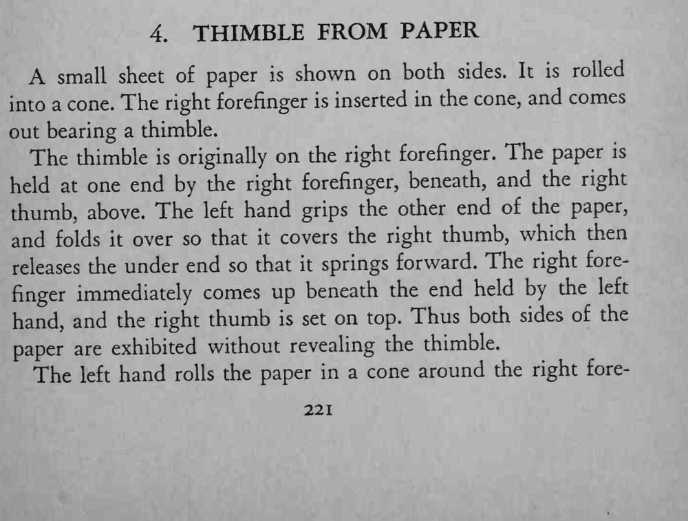
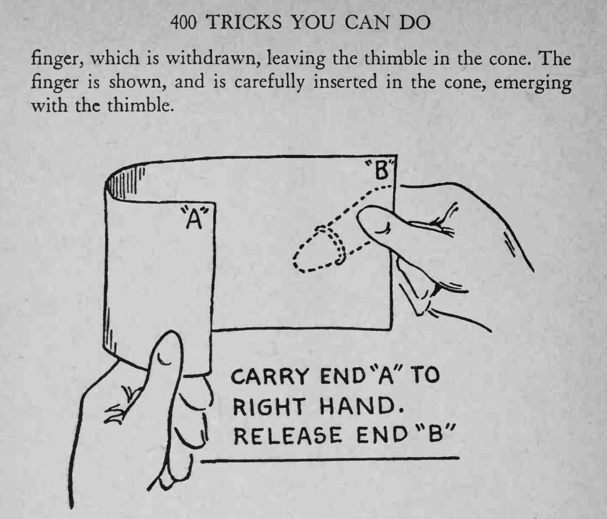

一张纸两面展示后卷成纸锥，右手食指伸进去，出来时指尖上竟戴着拇指套。
关键是借翻纸遮住拇指和拇指套，卷锥要包紧，食指抽出时拇指套才留在里面。


A small sheet of paper is shown on both sides. It is rolled into a cone. The right forefinger is inserted in the cone, and comes out bearing a thimble. The thimble is originally on the right forefinger. The paper is held at one end by the right forefinger, beneath, and the right thumb, above. The left hand grips the other end of the paper, and folds it over so that it covers the right thumb, which then releases the under end so that it springs forward. The right forefinger immediately comes up beneath the end held by the left hand, and the right thumb is set on top. Thus both sides of the paper are exhibited without revealing the thimble. The left hand rolls the paper in a cone around the right fore- finger, which is withdrawn, leaving the thimble in the cone. The finger is shown, and is carefully inserted in the cone, emerging with the thimble. \J RELEASE END*B \*o'/